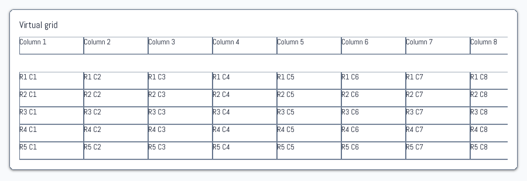

Browse documentation
Grid
Render a spreadsheet-like surface with two-axis virtualization and frozen panes.
Import
Load the optional component layer before using the examples below.
Ruby
require "zaniah/ui"Example
Supply row and column counts, dimensions, optional frozen panes, and a block to render each visible cell.
Rendered example

Ruby
Zaniah::UI::Grid.new(rows: 1000, columns: 20,
row_height: 28, column_width: 120,
frozen_rows: 1, frozen_columns: 1) do |row, column|
row.zero? ? "Column #{column + 1}" : "R#{row} C#{column + 1}"
end
Selection and editing
Use range selection and on_select, on_edit, on_fill, on_copy, and on_paste hooks for application-owned data.
API summary
Constructor options and behaviors are drawn from the component reference.
| Component | Constructor and methods | Variants or behavior |
|---|---|---|
Grid | (rows:, columns:, row_height:, column_width:, frozen_rows:, frozen_columns:); scroll_to, range selection, on_select, on_edit, on_fill, on_resize, on_copy, on_paste | two-axis virtualization, frozen panes, visible-cell resize/fill and typed clipboard hooks |
Accessibility
Grid exposes a table role with virtualized cells; only visible cells are materialized.
| Component | Semantic role |
|---|---|
Grid | table |